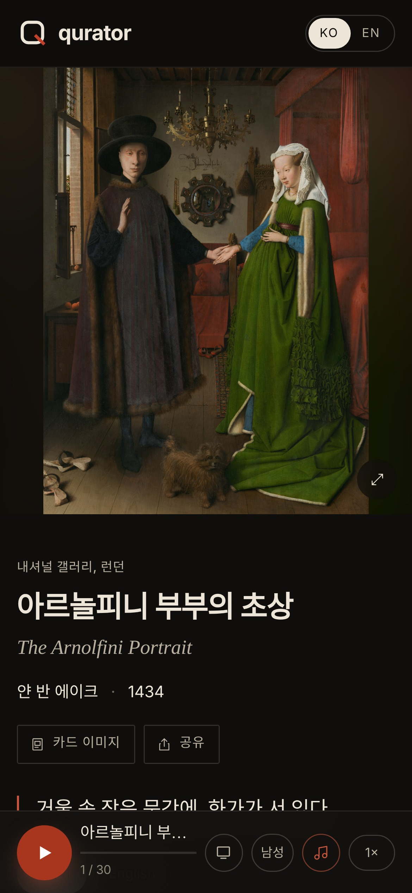
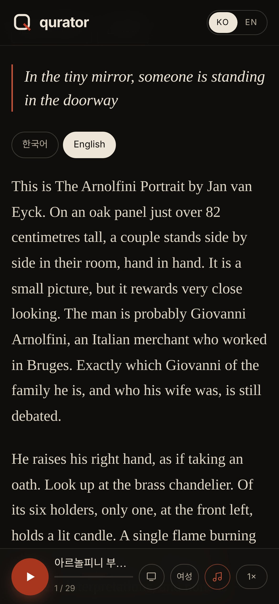
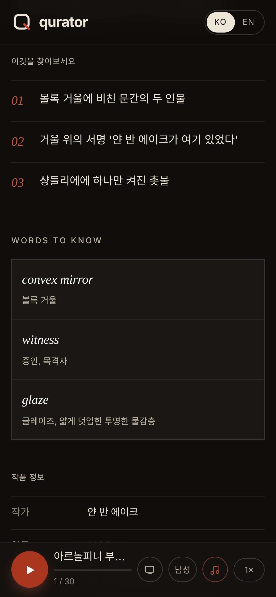

이 거울 속 문간에,화가가 서 있다고 합니다.
QURATOR·매일 첫 작품 무료매일 아침 명작 세 점,보는 법까지.
Johannes de eyck fuit hic · 1434얀 반 에이크가 여기 있었다
벽에 직접 쓴 듯한 이 서명은
화가가 이 장면의
증인이었음을 암시합니다.
Words to knowwitness증인, 목격자
매일 아침 명작 세 점,보는 법까지.
매일 첫 작품 무료
오늘의 작품 보기 →
앱 설치 없이 바로 열려요